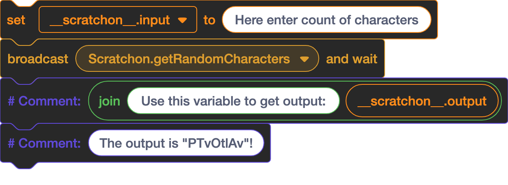

Scratchon b1.6
The development of this project is currently paused. In the meantime, I encourage you to explore my other active projects, such as XMLCord or SimpleAI, which are still being actively maintained and improved.
Examples
Get Random Characters
Here is an example for use "Get Random Characters" block!

Wait X ticks

Changelog
Scratchon 1.5
- Added message kits
- Published Scratchon!
Scratchon 1.6
- Created page on GitHub
- Changed "pip" to "scr"
- Added "raiseException" to libraries
- Added "type(variable)", it return type of Scratchon variables, available types:
Show/hide
- scratchonType 'list'
- scratchonType 'object'
- scratchonType 'dict'
- scratchonType 'str'
- scratchonType 'invalid'
- Added "return(value)", it returns "value" variable (set "__scratchon__.output" variable to "value")
- Removed "__self__", "__scratchon__" and "__logs__" requirement in "scratchon.init" function
- Added Exceptions
- Added Catch Exception funcion